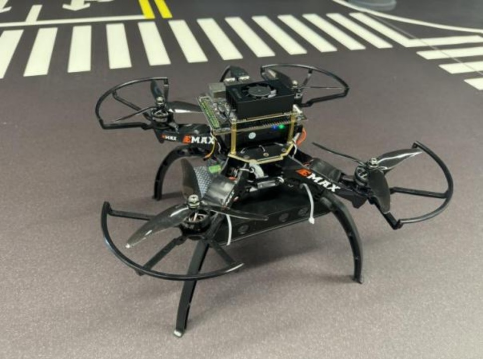
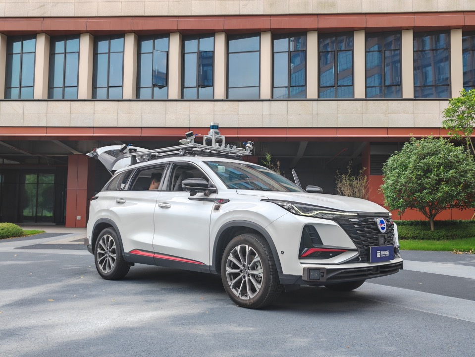
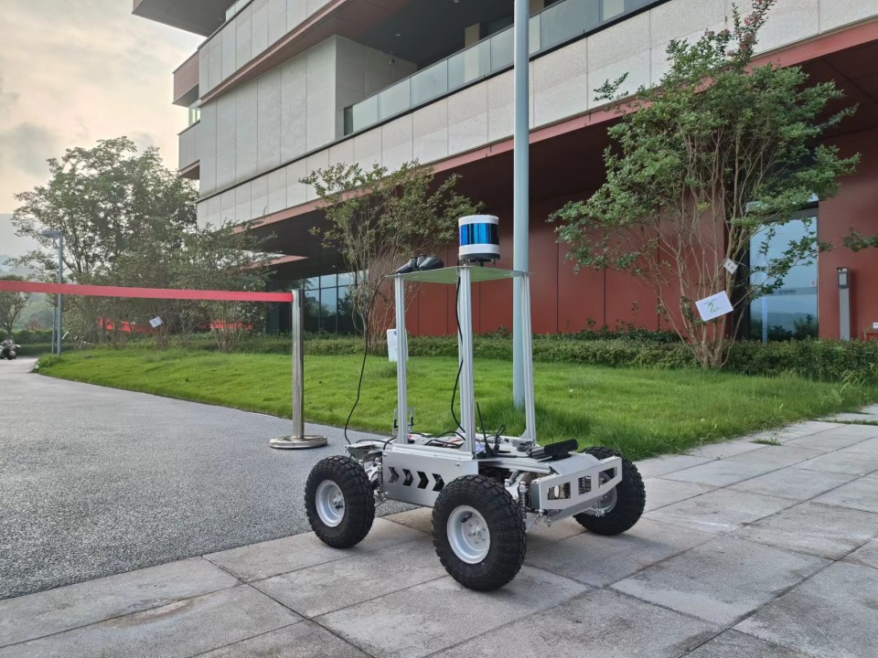
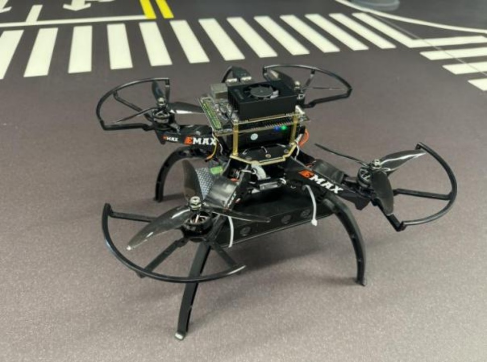
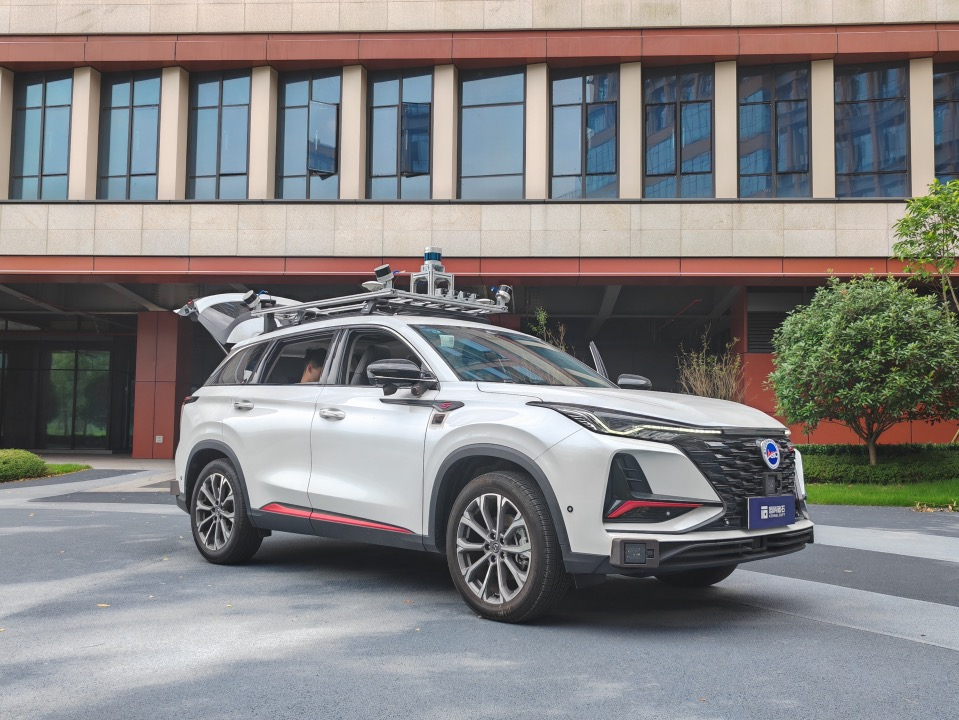
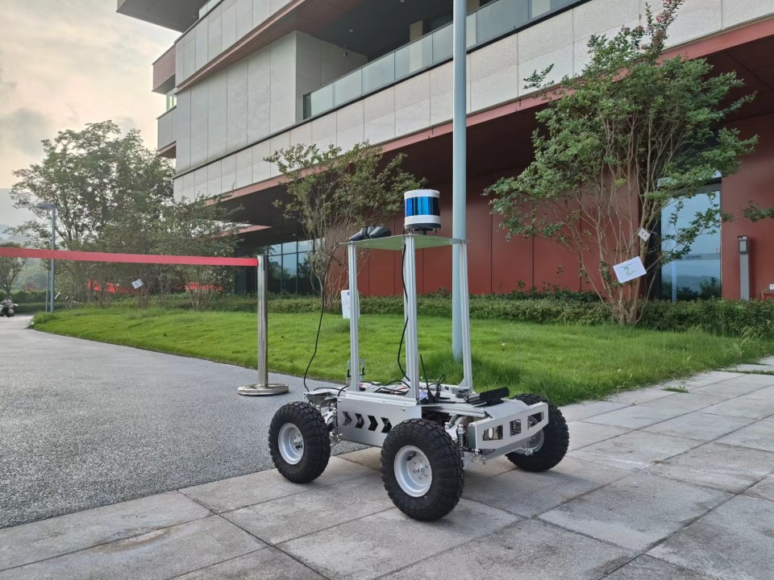

Research Directions
Reinforcement Learning (RL)
We explore advanced reinforcement learning techniques that allow machines to learn optimal actions through trial and error in dynamic environments.

Offline Reinforcement Learning
Our work in offline RL focuses on improving the performance of agents using previously collected data, without the need for real-time interaction with the environment.


Diffusion Policy
Diffusion policies enable learning policies in high-dimensional spaces, which are particularly useful for complex decision-making tasks in robotics.


Decision Transformer
We utilize decision transformers to process sequential decision-making problems, enabling efficient planning and control for a wide variety of tasks.


Simulation and Physical Entities
Our simulation environments and physical systems bridge the gap between theoretical research and real-world applications, allowing us to test and validate our models effectively.
 




